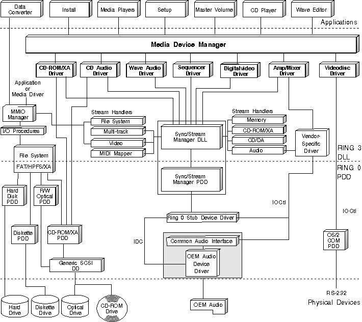

The objects that receive the device control commands issued by multimedia applications using mciSendCommand or mciSendString are called media control drivers. Media control drivers are OS/2 dynamic link libraries (DLLs) that provide a level of hardware independence for applications. The Media Device Manager (MDM) provides the interface to these media objects. The MDM also provides a level of component management, making it possible for an application to synchronize its use of MCDs as well as share MCDs with other applications.
The following figure illustrates the MCDs provided with the OS/2 multimedia system.